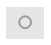
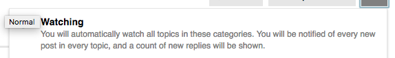

Hi, All,
As we are looking to get staff more and more used to using Discourse as the primary place for technical discussion, we want to ensure that call staff are Watching the Development and Core categories. This will ensure they receive notifications and emails for all topics posted there.
This can be done by clicking on the category, and then clicking on (in the top-right):

and then clicking on:

This will mark them as watching.
Also, you may want to install this plugin which allows us to create a group for specific people (e.g. staff and core devs) and it marks everyone in that groups is watching these categories automatically.
@Anthony - can you ask all staff to watch these categories and install the plugin?